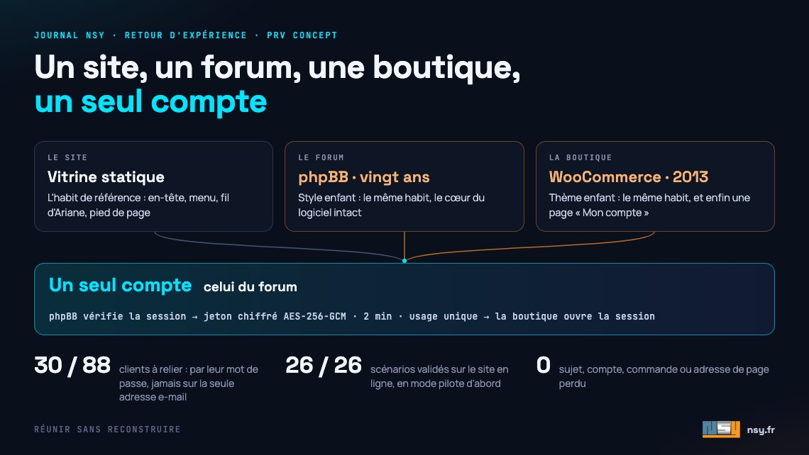

Un site, un forum, une boutique, un seul compte :
réunir sans reconstruire
Pendant des années, PRV Concept a vécu à trois adresses : un site, un forum phpBB de vingt ans, une boutique WooCommerce ouverte en 2013. Chacun son allure, chacun son compte. PRV Concept est l'association des passionnés du V6 PRV que préside le fondateur de NSY, et c'est notre laboratoire. Dans ce cas de figure, la tentation s'appelle la table rase : tout migrer vers un outil unique. Nous avons fait l'inverse. Le forum et la boutique ont gardé leur moteur, ils ont pris l'habit du site, et un seul compte ouvre désormais les trois. Retour d'expérience côté ingénierie, avec les deux décisions qui ont compté : qui fait foi pour l'identité, et quelle preuve on exige.

Trois maisons, trois habitudes
Le forum portait un thème d'une autre époque, la boutique celui de ses débuts. On passait de l'un à l'autre en changeant de menu, de charte et parfois d'onglet. Un membre avait un compte sur le forum et, s'il commandait à la boutique, un second compte avec un second mot de passe.
Pour l'association, trois outils à tenir. Pour le visiteur, trois sites qui ne se reconnaissaient pas entre eux.
Pourquoi ne pas tout reconstruire
Refaire le forum et la boutique dans un seul outil, c'est migrer vingt ans de sujets et de messages, les comptes des membres, l'historique des commandes, et les adresses de milliers de pages que Google et les membres connaissent. Une migration de ce genre perd toujours quelque chose : un lien, une pièce jointe, une habitude. Et elle remplace deux logiciels éprouvés, maintenus par leurs communautés, par un développement qu'il faudrait ensuite entretenir seul.
La valeur de PRV Concept n'est pas dans le logiciel. Elle est dans ce que la communauté y a déposé. Le chantier s'est donc donné une règle simple : ne toucher ni au cœur de phpBB ni à celui de WooCommerce, et ne rien perdre. À l'arrivée, les sujets, les messages, les comptes, les commandes et les adresses des pages sont les mêmes.
Un seul habit, sans toucher au cœur
Les deux applications savent se laisser habiller : phpBB par un style enfant, WordPress par un thème enfant. C'est une surcouche qui hérite de l'original et n'en remplace que ce qu'on lui demande. Le forum et la boutique reprennent ainsi l'en-tête, le menu, le fil d'Ariane et le pied de page du site. Forum et Boutique deviennent deux rubriques du menu, qui s'ouvrent dans le même onglet.
L'intérêt n'est pas que cosmétique. Une mise à jour de sécurité de phpBB ou de WooCommerce s'installe comme avant, puisque rien de leur code n'a été modifié ; l'habit se révise à part. Et les défauts hérités se corrigent au passage : la boutique, qui n'avait jamais eu de page « Mon compte », en a une, avec la connexion, le mot de passe oublié et l'historique des commandes.
Un seul compte : qui fait foi ?
Relier deux applications par un compte commun commence par une décision : laquelle détient l'identité. Ici, le forum. C'est là que vivent les membres, leurs groupes, leurs droits sur l'espace réservé de l'association. La boutique lui fait confiance ; l'inverse n'est pas vrai.
La difficulté technique tient en une phrase : on ne peut pas faire tourner phpBB à l'intérieur de WordPress, les deux se disputent les mêmes variables du serveur. D'où un petit relais à la racine du site. Il laisse phpBB vérifier lui-même la session du membre, avec tous ses contrôles : adresse IP, navigateur, « se souvenir de moi », bannissements. Puis il remet à la boutique un jeton chiffré et authentifié (AES-256-GCM), valable deux minutes et une seule fois. La boutique ouvre la session du membre, ou lui crée une fiche client s'il n'en a pas. Personne ne tape de second mot de passe, et une déconnexion, d'où qu'elle parte, ferme les deux.
Le jeton est illisible dans les journaux du serveur. Il porte le sens dans lequel il circule, du forum vers la boutique ou l'inverse, et n'est jamais accepté dans l'autre. Un jeton rejoué ou altéré est refusé.
Le piège de l'adresse e-mail
Pour rapprocher les comptes qui existaient déjà, la solution évidente aurait été l'adresse e-mail : même adresse sur le forum et sur la boutique, même personne. C'est précisément ce qu'il ne fallait pas faire.
Sur ce forum, les inscriptions sont validées par un administrateur, pas par un lien envoyé à l'adresse. L'adresse d'un compte n'y est donc pas prouvée par son titulaire. Quelqu'un pourrait s'inscrire avec l'adresse d'un client de la boutique et, par un rapprochement automatique, lire ses commandes et ses adresses de livraison.
Sur les 88 clients de la boutique, 30 avaient un compte du forum à la même adresse. Pour eux, la boutique demande une seule fois le mot de passe de leur fiche client, ou de le recréer par « mot de passe perdu ». C'est cette preuve, et elle seule, qui relie les deux comptes ; ensuite, le forum suffit. Un peu moins de confort le premier jour, contre la certitude que personne ne s'approprie les commandes d'un autre.
Des garde-fous revérifiés à chaque connexion
Les règles du pont ne s'appliquent pas seulement le jour du rapprochement : elles sont revérifiées à chaque connexion. Seules les fiches de simples clients s'ouvrent par le forum, jamais un compte d'administration. Un membre correspond à une seule fiche. Et une session ouverte avec le mot de passe de la boutique n'est jamais fermée par le forum.
Tester en production, sans que personne ne le voie
Un compte unique ne se teste vraiment qu'en vrai : sur le serveur réel, avec les vrais cookies et la vraie boutique. Le bouton « Se connecter avec mon compte du forum » a d'abord vécu en mode pilote : seul un navigateur porteur d'un cookie de test le voyait.
Avec des comptes de test du forum, 26 scénarios sur 26 sont passés en ligne : création de fiche, déconnexions liées dans les deux sens, jeton rejoué et jeton altéré refusés, rapprochement par mot de passe, bouton de la page de commande. Le tunnel d'achat est resté identique, et le journal d'erreurs du serveur inchangé. Les fiches de test ont été supprimées, puis l'interrupteur basculé pour tout le monde.
Et le chef d'atelier suit
Réunir les trois surfaces a aussi servi l'assistant de l'association. Le Père Hervé, chef d'atelier en intelligence artificielle, vit dans la bulle du site, du forum et de la boutique. Il répond à partir des manuels d'atelier numérisés de la Bibliothèque, dont il cite la page et le folio, des sujets du forum avec leurs titres exacts, et des produits de la boutique. Sa règle : sans source, il ne répond pas. Sur le forum, chacune de ses réponses est relue par un humain avant publication.
Le compte unique lui profite directement : la même session lui dit qui lui parle, et un membre habilité peut l'interroger sur les documents réservés de l'association, qu'il ne citera à personne d'autre. Son architecture est détaillée dans notre retour d'expérience sur un chatbot IA branché sur un forum ; l'association le présente elle-même dans Le Père Hervé, un chef d'atelier en intelligence artificielle.
Ce que ce chantier dit d'un projet web
- Relier avant de reconstruire. Les outils qui marchent déjà portent souvent l'essentiel de la valeur : les contenus, les habitudes, les liens. Les faire travailler ensemble coûte moins et perd moins qu'une migration.
- Une seule source d'identité. Deux applications qui se font mutuellement confiance, ce sont deux portes d'entrée. Une seule fait foi, l'autre la consulte.
- La preuve avant le confort. Une adresse e-mail n'est pas une identité tant que personne ne l'a prouvée. Un mot de passe demandé une fois vaut mieux qu'un compte détourné.
- Mesurer avant et après. Un relevé avant de brancher, un journal d'erreurs comparé après : on sait ce qu'on a changé, et ce qu'on n'a pas cassé.
C'est la méthode d'une refonte de site internet bien menée : garder ce qui marche, reconstruire le reste. Le projet complet est décrit sur notre page Réalisations, et l'association raconte le résultat du côté des membres, vidéo à l'appui, dans Le site, le forum et la boutique ne font plus qu'un.
Un site, un forum ou une boutique qui vivent chacun de leur côté ? Parlons-en — ou voyez comment se mène une refonte qui garde ce qui marche.
Ce chantier vit aussi sur les réseaux — venez en discuter